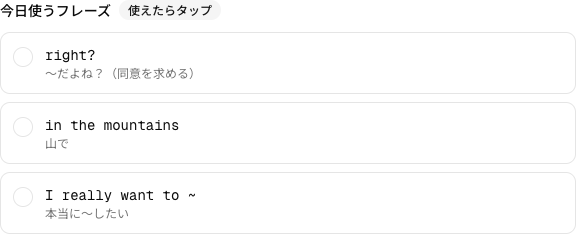
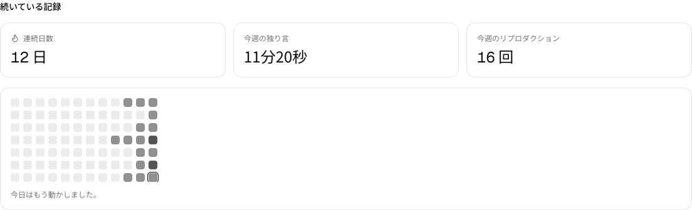
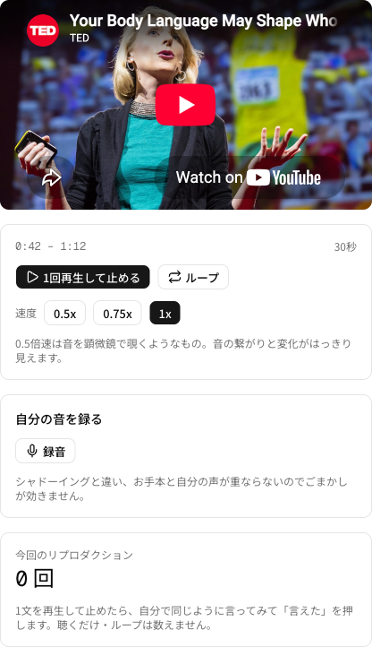
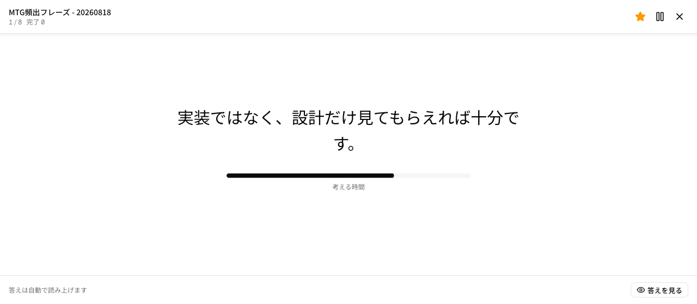

② 解決する面倒
「動画を見て終わり」にさせない
学習法そのものは腑に落ちる。問題は、1人で続けようとした瞬間に挟まる面倒のほう。その一つひとつを消しにいった。
面倒紙に行間を空け、カラーペン7色で音の記号を手書きする
→
repro-talkスクリプトをドラッグして記号を付けるマーキングエディタ。7種をそのまま画面に

面倒分からない音や表現を、その都度ChatGPTに手動でコピペして聞く
→
repro-talk選択してAIに解説。意味・使われ方・独り言でそのまま使える例文3つが返る

面倒リプロダクションで覚えた表現が、独り言で使われず眠る（0と100が繋がらない）
→
repro-talkフレーズを①から②へ受け渡し、「今日使うフレーズ」に。使えたら卒業

面倒続けられているのか、やった事実が見えず自信にならない
→
repro-talk連続日数・ヒートマップ・再現回数・独り言の合計時間で可視化

面倒同じ30秒を何度も聴き直したいのに、YouTubeでは毎回シークバーを戻して位置を合わせる。練習より、再生位置を探す時間のほうが長い
→
repro-talk区間を一度決めれば、あとはボタンひとつ。A-Bループで何度でも、「1回再生して止める」なら終わりで自動的に止まる。シークバーには触らない

面倒独り言が止まる。日本語で考えてから英語に組み立てている——かといって英作文帳は、答えを手で隠してめくる作業になる
→
repro-talkコースを選んで流すだけ。日本語 → 考える時間 → 答えを読み上げ → 次へ。まだ言えない文に★を付け、次からはそれだけ流す

面倒練習したい英文が動画にない。仕事で言えなかった一言ほど、YouTubeを探しても出てこない
→
repro-talk自分で書いた英文を貼ればクリップになる。AIの声が1文ずつ読んで止まるので、同じ画面でマーキングも録音も聴き比べもそのまま